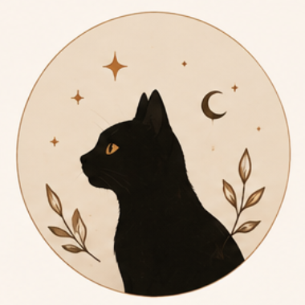

Никита Правка
Тени прошлого · Глава 3. Кафе у окна
Поправил реплику в сцене у окна: «дождь» на «морось», чтобы совпало с концовкой ветки.
Открыть в редакторе
За окном шёл дождь, и она всё ещё ждала.За окном шла морось, и она всё ещё ждала.

Если редактор правит текст, это увидит автор. Если автор публикует новое, это увидят соавтор и редактор.
Никита Правка
Тени прошлого · Глава 3. Кафе у окна
Поправил реплику в сцене у окна: «дождь» на «морось», чтобы совпало с концовкой ветки.
Открыть в редакторе
За окном шёл дождь, и она всё ещё ждала.За окном шла морось, и она всё ещё ждала.

Лиса с фонарём Публикация
Тени прошлого · Глава 4. Перекрёсток
Опубликована новая глава с двумя выборами. Редактору и соавтору придёт уведомление.
К странице работыНикита Правка
Тени прошлого · Сцена «Парк»
В интерактивном редакторе сдвинул связь ветки: выбор «остаться» больше не ведёт сразу к концовке.
Открыть карту сценАля Публикация
Между кулисами · Концовка «Тихий зал»
Соавтор выложил новую концовку. Текст в кабинете истории, метки не трогали.
Читать концовкуЛиса с фонарём Публикация
Тени прошлого · Описание
Обновила аннотацию и возрастной рейтинг. Редактору стоит глянуть метки перед следующей вычиткой.
В кабинет историиНикита Правка
Тени прошлого · Глава 1. Фонарь
Сократил абзац в начале: повтор про фонарь убран, ритм ближе к главе 2.
Открыть главу
Она снова подняла фонарь и снова посмотрела на огонь, хотя уже знала, что он тот же.Она подняла фонарь. Огонь был тот же.